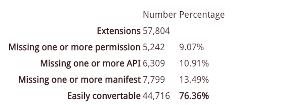

Mozilla announced some time ago that it would move away from the add-on system that played a role in making Firefox the browser it is today, to WebExtensions.
The organization revealed last month that it plans to only support WebExtensions in Firefox from the end of 2017 on.
If the schedule holds, Firefox 57 will only support WebExtensions and no longer classic add-ons. Te consequence is that add-ons that have not been ported won't be compatible with Firefox going forward.
There are reasons why Mozilla may delay making the cut when Firefox 57 is released; Firefox WebExtensions support is in active development right now. Some APIs are not complete, other features are not implemented yet, and some may not be on the radar at all right now.
Mozilla may also analyze how many add-ons will stop working when the change is made, and may decide to wait a bit longer to decrease that number.
One positive side effect of WebExtensions support in Firefox is that many Chrome extensions become compatible.
It is already possible to install many Chrome extensions in Firefox using a Firefox add-on called Chrome Store Foxified. Success depends largely on the version of Firefox, and the WebExtensions APIs it supports.
But how many Chrome extensions will run in Firefox?

Mozilla's Andy McKay decided to find out in November 2016. He parsed the Chrome store sitemap and got 100,000 extensions, apps and themes out of it which he analyzed to find out how many of them will run in Firefox.
According to his findings, about 76% of Chrome extensions of the sample size will run in Firefox. The remaining extensions either miss one or more APIs, one or more permissions, or one or more manifest.
There are some caveats however that need to be mentioned. First, that it does not mean that "compatible" extensions will run out of the box using Chrome Store Foxified. McKay notes that most should be easy to convert however to Firefox's format.
Other caveats mentioned are that the scan looked only at APIs, manifests and permissions, and not at other factors such as Web API support (which may be different). Also, API implementations may be different.
This figure will likely improve when Mozilla updates WebExtensions in the Firefox web browser though.
Closing Words
Firefox will drop support for a part of the add-ons that are currently available for the browser, yet it will gain support for Chrome extensions in the process.
It would be ideal obviously if Firefox would not lose any but gain support for Chrome nevertheless, at least for the foreseeable future.
Will the Chrome extensions be able to replace the lost functionality of Firefox add-ons that are no longer compatible with the browser? While that may be the case partially, Chrome extensions won't fill the gap completely as they can never offer what Firefox's previous add-ons system brought to the table.
Now You: Do you have Chrome extensions in mind that you would like to see in Firefox?

Does this also mean the death of the ugly 'theme' that's seen in every Firefox picture in this site? :D
I don't like this idea at all. If Mozilla is going to drop support for classic addons in FF57 that means Nightly 57 which will release in June 2016 won't support them as well. The problem is that WebExtensions API is still not mature enough in order to support extensions like Tab Mix Plus, TreeStyleTab or DTA, and almost certainly won't be in 6 months as well.
Personally, I would be surprised if the deadline doesn't get pushed back.
I would think that they will allow a switch for testing/devs etc until stable lands, assuming the timetable holds, which like Andy, I believe will get pushed back
First, June 2016 is already long past.
Secondly, I've switched to CyberFox, which not only skips the ugly Australis "me-too Chrome" theme, but will likely continue to support XUL/XPCOM extensions. Yay!
"but will likely continue to support XUL/XPCOM extensions. Yay!"
But for how long? Once Mozilla drops them, all those developers aren't going to continue to develop for a tiny-share one-man operation like Cyberfox.
Get real.
Considering the number percentage, "Chrome Store Foxified" seems a bit exaggerated, "Firefox Chromified" would be closer to the truth IMO.
This duality is nothing special. It is already the case in Opera, and I have not found 1 Chrome extension I wanted to have that does not work in Opera. Perhaps that is coincidence, it probably is, but it is very nice to have both options.
Since Opera has been Chromium based for quite a few years now, it's no surprise.
Whoa wait a minute there is no wsy to tell if an addon is installed as a webextension
https://blog.mozilla.org/addons/2016/12/16/meet-some-nifty-new-webextensions
i much prefer firefox to chrome and i doubt chrome has anything to offer i cant find in the firefox AMO.
After briefly switching to Chrome for my main browser I switched back. The Chrome Web Store is a mirror of Google play b/c it is unsafe and unregulated. Whatever safeguard are in place, they are ineffective. Extensions that literally spy on you or worse are common or seem common.
I don't understand what you mean by "Google play b/c"? What are you referring to exactly? And why is it unsafe?
"Chrome extensions won't fill the gap completely as they can never offer what Firefox's previous add-ons system brought to the table."
Does this mean that Chrome extensions are inherently less capable because of some technical reason ?
Yes, the API limits them. Firefox add-ons are not really limited currently. So, in terms of capabilities we have: Firefox Add-ons (current) > Firefox WebExtensions > Chrome Extensions
Does anyone know if self-destructed cookies will have e10 and WebExtensions support?
http://arewee10syet.com/ ... currently is says "unknown" - I believe unless the developer makes changes it will be incompatible
Apparently, the Firefox devs are not adding support for a key feature for e10, which will allow addon authors to delete local storage after a certain time limit.
This means that SDC's local storage removal will not work with e10 at the moment.
If you really like your current extensions, your only hope is to encourage extension developers to start targeting Pale Moon specifically. Or get somebody else to start forking them for Pale Moon.
I believe it was here on gHacks that I saw an article which quoted an extension developer as saying this switch Mozilla is doing will effectively kill his add-on. And his is far from being the only one that will be affected.
The article I referenced is here (not on gHacks):
http://www.zdnet.com/article/mozilla-changes-firefox-apis-developers-unhappy/
Quote: Some Firefox developers are not happy with these changes. Nils Maier, author of the popular Firefox extension, DownThemAll, wrote "'deprecating' XUL-based add-ons with XPCOM access takes the cake. Once that happens, I will abandon ship for sure. Simply because I cannot continue developing most add-ons at all as they will not and cannot fit into any "WebExtensions" API. The flexibility of what XUL-based add-ons can do IS the major selling point of the Firefox add-ons ecosystem and therefore IS one of the last remaining selling points of Firefox."
Pale Moon is kinda behind the times. Their Gecko engine fork is based off a variant of Firefox 20-something.
Some addons would need to add older backward-compatibility support to ensure it would work with PM.
You're kinda behind the times. PM is now rebased on FF38, but like always, has critical security updates beyond the base rendering engine. Changing MIN ver #, or adding PM target app identifier, is not really backward compatibility like in rewriting the code, which usually isn't needed. Australis-specific extensions aren't needed anyway. PM has actually fared better than SeaMonkey although the converter did help SM.
"If you really like your current extensions, your only hope is to encourage extension developers to start targeting Pale Moon specifically. Or get somebody else to start forking them for Pale Moon."
I doubt Pale Moon has the support base to keep them alive. After all, it is essentially a one-man or two-man shop with what? Maybe 100,000 - 150,000 users? If that.
But irrespective of the number of current users, it's still your only hope.
For the many users, choosing Chrome / Firefox or any other browser is fine. For those with more demanding requirements then Pale Moon will be the only option come the year end. So let's hope it gets the support it deserves.
No, it's not my only hope. Pale Moon's only hope is keeping the past alive by it's fingernails.
Web standards change all the time and Pale Moon has been able to scrape by using many of Firefox's coat tails. Now with that gone, who knows where, with the future being uncertain. Never mind the extensions. Will it still render webpages correctly as standards change.
Besides, you'll certainly never get the large extension developer base you once had with Firefox, that's for sure. I doubt many would bother with a tiny user base that small.
Not really this because I still cant find any Google Chrome WebExtensions who
is as sophisticated as the Add-one's from Mozilla Firefox.
The one who come closed is Ublock origin.
Not only the very obvious NoScript, TabMixplus, Add bookmark here, auto sort bookmark, self-destructing
cookies and a few others who are more than miles apart, when you compare them after functionality.
So main idea for Mozilla is "Please keep the Add-one's as long as there is not a equivalent in the air!"
The question is why would anyone bother running chrome extensions when there is little to nothing worthwhile that cannot be had from the firefox extensions library which is vastly superior.
I've used both opera, vivaldi and many other Chrome based browsers in the past and I must say I am not impressed.
If anyone can come up with some sort of compelling reasons as to why the chrome webstore and its extensions I would like to know because all i have found is broken extensions and watered down versions of firefox extensions.
I'll stay informed going forward and if I don't like what seems to be developing, I will simply stop updating Firefox..
NoScript and DownThemAll are essential.
NoScript will work. DownThemAll can work if the developer is willing to put in the work with Mozilla or someone else does. We'll see! The thing is that there's no choice, it has to be done because any important evolution in Firefox breaks add-on compatibility and forces add-on developers to work their ass off to fix it so people like us aren't inconvenienced by the loss of say NoScript or DownThemAll. It all happens without us knowing, it's not hypothetics.
As a result Firefox either can't evolve or very slowly while repeatedly annoying the hell out of all developers. This problem is fixed with WebExtensions with many other medium and long term upsides, at the cost of one serious short term downside: There's one compatibility streak to take care of and it's steep, so not all extensions will be ready in time. And one unknown: The extent of the flexibility of WebExtensions.
@Albert - And FF will start breaking down as time goes on. Security issues will develop and web pages won't render properly. What will you do then? Use Chrome? Do they have an add-on like DownloadThemAll? I don't think so.
It's silly to base all your browser experience on one plug-in. You'll just have to learn use a separate download manager program or do without. Besides, the developer of DownloadThemAll has said he will no longer continue to support the extension so it looks like you're out of luck.
Practically every developer making Firefox extensions these days wants users to contribute a small sum towards its development or use. That being the case, I would imagine they'll rewrite them as Webextensions in order to avoid missing out on income.
Except that the Webextensions API is deliberately being designed to restrict the abilities of extensions - so it won't be possible to convert more complex extensions without compromising their capabilities. Pale Moon is the only browser committed to retaining the necessary technology to support them into the future.
One of the Chrome extensions that I love is Streamkeys. It's an extension that allows you to control many audio websites with user-configurable hotkeys.
It's one of the Chrome extensions I use that currently only works with Chrome.
Would love to see this working with Firefox! I haven't tested this with FF yet, so if you have please let me know if it is working for you. I have a feeling it will not though due to lack of a keyboard settings UI that Chrome has.
I can't get any to work yet. Firefox won't let me sign them.
Just the new firefox logo
https://i.imgur.com/K0uYX6a.png